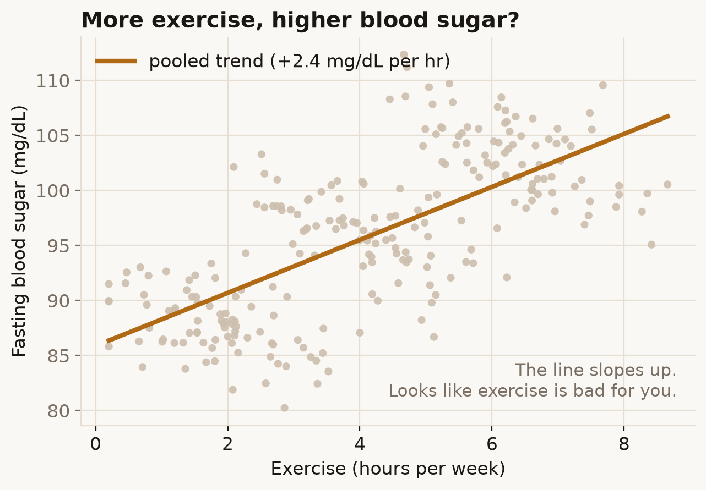
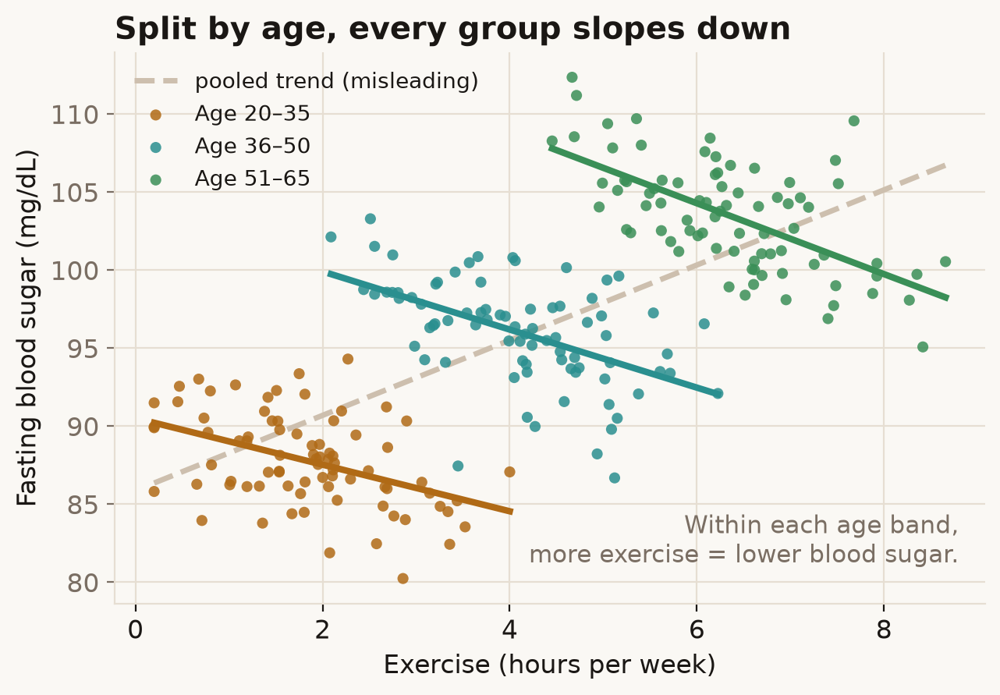
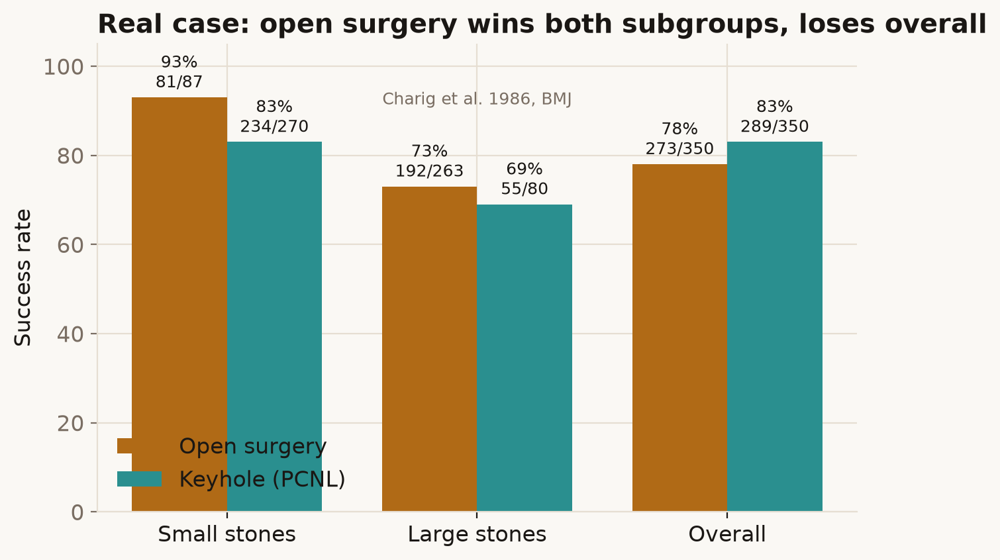

The idea
A running set of small statistical curiosities — the kind of result that makes you do a double-take whether or not you do data for a living. Each piece takes one counterintuitive idea, sells it with a chart you can argue with, explains the mechanism underneath, and then shows the same effect biting in a real, published study. This is piece 01.
Piece 01 — Simpson's Paradox
Picture a health study. You plot how much people exercise against their fasting blood sugar (a diabetes-risk marker) and draw the best-fit line through the cloud of points.

That can't be right, and it isn't. Colour the very same points by age band and fit a line through each group on its own:

Nothing about the data changed between the two pictures. The only difference is whether we looked at age. Older people here both exercise more and run higher blood sugar, so when you ignore age, exercise quietly stands in for age and the trend flips. A relationship that's true in every subgroup can reverse in the pooled total. That's Simpson's paradox. Why it reverses, in detail →
It isn't just a teaching toy
In 1986 Charig and colleagues compared two kidney-stone treatments in the BMJ. Keyhole surgery won overall (83% vs 78%). Split by stone size and it flips: open surgery won for small stones and for large stones, yet lost the total — because the easy cases had been steered toward keyhole, flattering its average.

An average pooled over groups can contradict every group it's made of. Before you trust a trend, ask what else is changing along that x-axis — there's usually a lurking variable doing the talking. Try the interactive →
More pieces are queued: Anscombe's quartet and the Datasaurus (identical summary stats, wildly different shapes), survivorship bias, the base-rate fallacy, and Berkson's paradox.